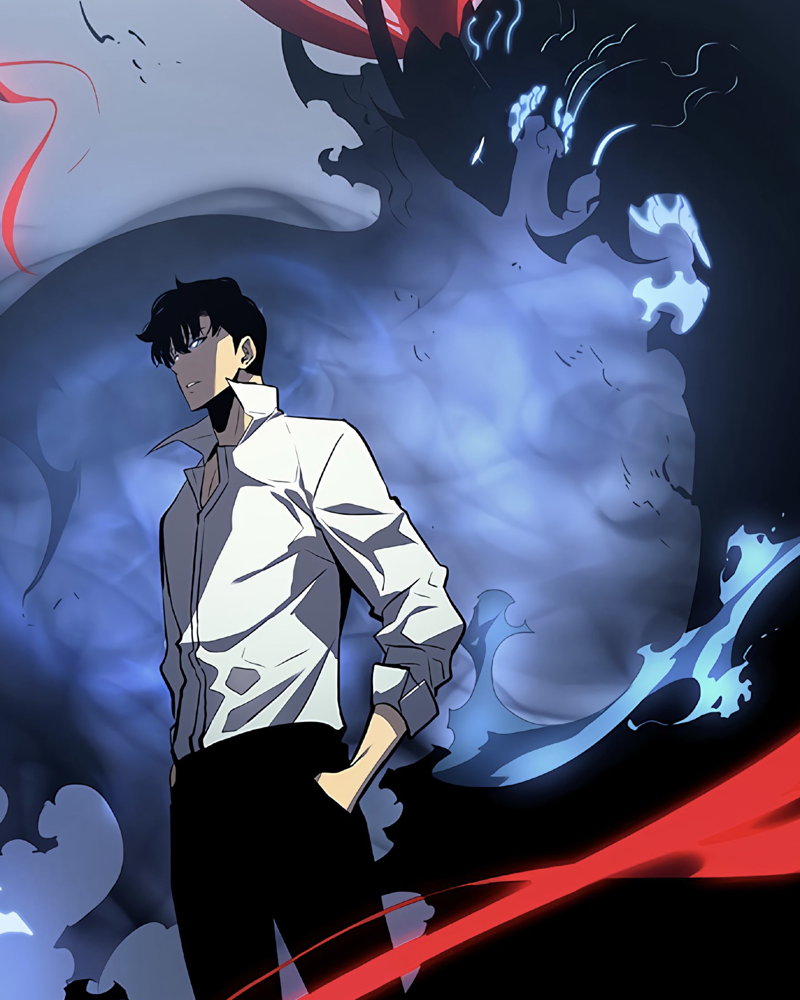

Domínio do Monarca
Expansão de poder e fortalecimento
Após sua luta contra Igris, Sung conseguiu evoluir o suficiente
para trocar sua classe, de necromante para Monarca das Sombras.
O Domínio do Monarca cria um território sombrio envolvendo o campo de batalha.
Nessa área, todas as sombras de
Jinwoo recebem um grande aumento de poder, defesa e velocidade.

Inventário
Função do sistema / Armazenamento
Após passar pela dungeon dupla e morrer pelas estátuas do Arquiteto,
Sung reviveu já com a habilidade de Inventário. Ela permite guardar itens,
armas, materiais e até cadáveres para futura extração de sombras.
Sem peso e congelando o tempo interno, Jinwoo carrega arsenais inteiros com facilidade.

Toque do Dominador
Telecinese
Ao derrotar Igris, Jinwoo obtém a pedra rúnica do Toque do Dominador.
Ele pode mover objetos, esmagar inimigos no ar e paralisar oponentes
usando apenas sua vontade — uma telecinese brutal que distorce o campo ao seu redor.
|

Igris
O Cavaleiro Vermelho-Sangue
Embora tenha sido a primeira grande sombra extraída por Jin-Woo,
Igris inicialmente teve um papel menor na história e sua posição
como a sombra mais forte de Jin-Woo acabou sendo tomada primeiro por
Tusk e depois por Beru. No entanto, após Jin-Woo renascer como o novo
Monarca das Sombras, Igris obteve seus verdadeiros poderes e saltou
dois níveis, de Cavaleiro de Elite para Marechal.

Beru
O Rei Formiga
Depois que Jinwoo mata o Rei Formiga,
ele extrai sua sombra para adicionar ao seu exército.
Quando a sombra demonstra a capacidade de falar com ele e pede um
nome, Jinwoo o nomeia Beru, em homenagem ao autor de As Formigas,
e o envia para massacrar o que restou da colônia de formigas.

Kaisel
A Sombra de Kaisellin
Depois de matar Baran, Jinwoo extraiu a sombra do corpo de Kaisellin
e a chamou de Kaisel, pois não se lembrava do nome original do wyvern.
Após deixar o Castelo dos Demônios, Jinwoo usou Kaisel para ir ao hospital
onde sua mãe, Park Kyung-Hye, era paciente.
|


Sung Jin-Woo
O Monarca das Sombras
Idade: 24 anos
Classe: Assassino, Necromante
Sung Jinwoo começou como o caçador mais fraco de todos, alguém tão frágil que mal conseguia completar masmorras de nível baixo e frequentemente estava à beira da morte. Sua vida mudou drasticamente após um incidente em uma masmorra de dupla camada, onde apenas alguns sobreviventes escaparam. Ali, Jinwoo recebeu o direito de participar de um "Sistema", tornando-se um Jogador, capaz de evoluir tornando-se mais forte sem limites — algo que nenhum outro caçador possuía.
A partir daí ele treinou, enfrentou masmorras perigosas e desafios mortais, sempre subindo de nível enquanto despertava habilidades únicas. Aos poucos, deixou de ser um caçador fraco e se tornou um guerreiro temido, dominando sombras de inimigos derrotados e criando um exército próprio, crescendo até o ponto de enfrentar monstros e chefes que antes eram impossíveis.
Com o tempo, Jinwoo descobre a verdade por trás do Sistema, dos Monarcas e dos Governantes, percebendo que seu poder era parte do legado do Monarca das Sombras, Ashborn, cujo trono ele acabou herdando. No auge de sua força, Jinwoo se torna o Monarca das Sombras, uma entidade capaz de rivalizar com seres antigos que travam a guerra entre luz e escuridão há eras.
De um jovem frágil que lutava para sobreviver, Sung Jinwoo evolui para uma das entidades mais poderosas de todo o universo, respeitado e temido por caçadores, monstros, governantes e monarcas. Sua jornada é um caminho de dor, superação e determinação — uma ascensão lendária que redefiniu o equilíbrio do mundo.
|